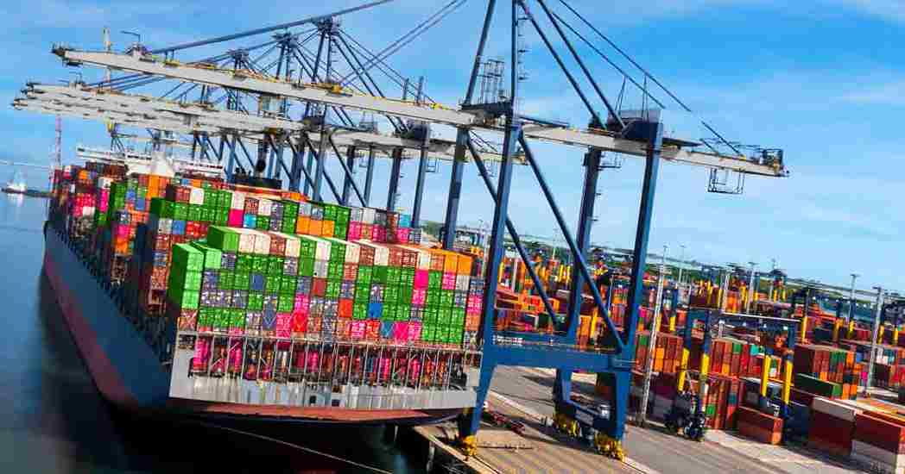

Sistem Manajemen K3
Mengidentifikasi dan mengendalikan risiko, mencegah kecelakaan kerja, melindungi kesehatan pekerja
P2K3
Organisasi K3
Sertifikasi
Mengidentifikasi dan mengendalikan risiko, mencegah kecelakaan kerja, melindungi kesehatan pekerja
Sistem Manajemen Keselamatan dan Kesehatan Kerja (SMK3) sangat penting dalam industri logistik laut karena lingkungan kerja pelabuhan dan kapal memiliki tingkat risiko tinggi.
Dengan penerapan SMK3, perusahaan mampu meningkatkan keamanan operasional, menjaga keselamatan pekerja, serta memastikan proses logistik berjalan secara efisien dan sesuai regulasi.

Struktur Organisasi K3 untuk Perusahaan Logistik Laut
Deskripsi Menyeluruh Mengenai Peran Strategis dan Tanggung Jawab Jabatan Manajemen K3
Tugas:
• Menetapkan kebijakan K3 di seluruh area pelabuhan.
• Mengeluarkan SK pembentukan P2K3 & Tim K3.
• Menyetujui anggaran program K3, APD, dan pelatihan.
• Memastikan seluruh kegiatan mematuhi regulasi & standar internasional.
Tanggung Jawab:
• Bertanggung jawab penuh terhadap pencapaian Zero Accident.
• Memberikan wewenang kepada Manager HSE.
• Menjadi penanggung jawab utama saat terjadi kecelakaan berat.
Tugas:
• Merancang dan mengawasi sistem K3 di pelabuhan.
• Menyusun program inspeksi, pelatihan, audit & kampanye keselamatan.
• Menyusun HIRADC untuk operasi pelabuhan.
Tanggung Jawab:
• Mengkoordinasikan seluruh kegiatan HSE.
• Menyusun laporan kecelakaan & audit.
• Menjadi sekretaris P2K3.
Tugas:
• Mengkoordinasikan pelaksanaan K3 di lapangan.
• Menyusun jadwal safety patrol & safety talk.
• Membimbing tim audit & tim darurat.
Tanggung Jawab:
• Memastikan aktivitas bongkar muat berjalan aman.
• Mengawasi penggunaan APD & SOP.
• Melaporkan hasil pemantauan kepada Manager HSE.
Tugas:
• Melakukan pemeriksaan rutin terhadap alat kerja, alat angkat, jalur evakuasi, dan APD.
• Mengisi checklist inspeksi dan mendokumentasikan temuan lapangan.
• Melakukan gap analysis antara kondisi aktual dengan standar SMK3.
Tanggung Jawab:
• Melaporkan hasil audit kepada Koordinator K3 dan Manager HSE.
• Memberikan rekomendasi tindakan korektif (Corrective Action) bila ditemukan pelanggaran.
• Memastikan tindak lanjut temuan audit dilaksanakan oleh unit terkait.
Tugas:
• Menyelenggarakan pelatihan dasar K3, pelatihan tanggap darurat, dan safety induction bagi pekerja baru.
• Menyusun materi kampanye keselamatan (poster, banner, safety reminder).
• Menyelenggarakan Safety Talk mingguan dan Toolbox Meeting harian di lapangan.
Tanggung Jawab:
• Meningkatkan kesadaran dan budaya K3 di seluruh lini kerja.
• Mengukur efektivitas pelatihan melalui evaluasi peserta.
• Melaporkan data kehadiran dan hasil pelatihan kepada Administrasi K3.
Tugas:
• Bertanggung jawab pada penanganan keadaan darurat seperti kebakaran, tumpahan bahan berbahaya (oil spill), atau kecelakaan di dermaga.
• Melakukan evakuasi dan pertolongan pertama (P3K) kepada korban kecelakaan kerja.
• Memeriksa dan memastikan kesiapan alat pemadam kebakaran, APAR, hydrant, serta peralatan medis.
Tanggung Jawab:
• Memastikan seluruh pekerja mengetahui jalur evakuasi dan titik kumpul darurat.
• Melaksanakan simulasi darurat minimal setiap 3 bulan.
• Melaporkan setiap insiden kepada Manager HSE dan mencatatnya dalam logbook K3.
Tugas:
• Menyimpan dan mengelola seluruh dokumen K3 (SOP, form inspeksi, laporan kecelakaan, hasil audit).
• Menyiapkan data pendukung saat audit internal maupun eksternal.
• Menyusun laporan bulanan pencapaian K3.
.
Tanggung Jawab:
• Menjaga keteraturan dan validitas dokumen SMK3.
• Mengarsipkan hasil pelatihan, hasil audit, dan catatan kecelakaan sebagai bukti penerapan sistem.
• Menjadi pusat data dan dokumentasi K3.
Tugas:
• Mengawasi semua kegiatan operasional logistik laut: bongkar muat, crane, forklift, transportasi darat, dan penyimpanan kontainer.
• Memastikan semua pekerjaan dilakukan sesuai SOP dan jadwal aman kerja.
• Berkoordinasi dengan Manager HSE terkait area berisiko tinggi.
Tanggung Jawab:
• Menerapkan K3 secara langsung di lapangan.
• Memberi instruksi kepada Supervisor dan Mandor untuk menghentikan pekerjaan bila terjadi kondisi tidak aman.
• Bertanggung jawab atas kelancaran operasional dan keselamatan tim.
Tugas:
• Memimpin aktivitas bongkar muat dan memastikan alat angkat dalam kondisi layak.
• Mengontrol operator crane dan tenaga kerja agar mengikuti SOP.
• Melakukan pre-job safety briefing sebelum pekerjaan dimulai.
Tanggung Jawab:
• Menjaga keselamatan di area kerja.
• Melaporkan insiden dan kondisi tidak aman ke Manager Operasional dan Tim K3.
• Memastikan area kerja bersih dan tertata setelah kegiatan selesai.
Tugas:
• Mengoperasikan alat berat sesuai instruksi dan sertifikasi kompetensi.
• Melakukan pemeriksaan alat (daily check list) sebelum dan sesudah digunakan.
• Menjaga komunikasi dengan signalman dan petugas lapangan selama operasi.
Tanggung Jawab:
• Bertanggung jawab terhadap keselamatan diri dan pekerja di sekitar alat.
• Tidak mengoperasikan alat bila terdapat kerusakan atau risiko bahaya.
• Melaporkan kondisi abnormal segera ke Supervisor.
Tugas:
• Mengawasi pekerjaan buruh muat/bongkar di area dermaga dan gudang.
• Memastikan APD digunakan dengan benar dan sesuai area kerja.
• Mengatur rotasi kerja dan memastikan waktu istirahat cukup bagi pekerja.
Tanggung Jawab:
• Bertanggung jawab terhadap keselamatan pekerja lapangan.
• Menjadi penghubung antara operator, supervisor, dan Koordinator K3.
• Melaporkan kegiatan dan kondisi tidak aman ke Tim Audit & Inspeksi
Tugas:
• Mengelola pengadaan APD, pelatihan tenaga kerja, dan sertifikasi kompetensi operator.
• Menyusun rencana kebutuhan SDM terkait HSE dan memastikan pekerja telah mengikuti induksi K3.
Tanggung Jawab:
• Menjamin ketersediaan alat pelindung dan fasilitas pelatihan.
• Berkoordinasi dengan Manager HSE untuk perencanaan anggaran K3 tahunan.
• Mengatur jadwal pelatihan ulang (refresher training) bagi operator alat berat.
Tugas:
• Melakukan pengadaan, penyimpanan, dan distribusi APD sesuai kebutuhan tiap unit kerja.
• Mengatur jadwal pelatihan internal dan eksternal.
• Melakukan pendataan APD (stok, masa kedaluwarsa, penggantian periodik).
Tanggung Jawab:
• Memastikan setiap pekerja memiliki APD yang layak dan sesuai standar.
• Memantau efektivitas pelatihan melalui umpan balik peserta.
• Melaporkan kebutuhan dan pengeluaran APD ke Manager SDM & Umum.
| Tugas P2K3 | Aplikasi di Pelabuhan Logistik Laut |
|---|---|
| Menyusun program K3 | Menyusun program “Zero Accident bongkar muat”, SOP penanganan kontainer, prosedur crane/forklift, dan APD wajib. |
| Mengawasi pelaksanaan K3 | Pemeriksaan dermaga harian, memastikan operator crane memakai APD, pemasangan rambu bahaya, dan pengawasan akses area kontainer. |
| Memberi saran & masukan | Memberikan rekomendasi perbaikan ketika ditemukan near-miss, seperti pemasangan sensor limit atau pelatihan ulang operator crane. |
| Melakukan evaluasi & pelaporan | Membuat laporan bulanan tentang kecelakaan/near-miss, tingkat kepatuhan APD, dan melaporkannya ke manajemen pelabuhan. |
Langkah-langkah praktis untuk membentuk, menerapkan, dan memastikan efektivitas SMK3 di pelabuhan logistik.
Manajemen puncak (General Manager) menerbitkan kebijakan K3 yang memuat komitmen Zero Accident, kewajiban mengikuti SOP untuk semua aktivitas logistik, serta mekanisme penyebaran dan penandatanganan kebijakan di seluruh unit kerja.
Manajemen menetapkan metode pelaksanaan SMK3 melalui SOP, izin kerja (work permit), dan sistem pelaporan insiden (digital bila memungkinkan).
Membentuk Pokja K3 yang beranggotakan perwakilan HSE, operator alat berat, supervisor bongkar muat, HRD, dan petugas P3K untuk mengidentifikasi bahaya dan melaporkan hasil evaluasi secara berkala.
Fungsi: identifikasi bahaya, evaluasi pelaksanaan K3, laporan bulanan ke manajemen.
SMK3 memerlukan dukungan tenaga bersertifikat, anggaran tahunan untuk APD/pelatihan, serta fasilitas pendukung seperti pos P3K, jalur evakuasi, dan signage keselamatan.
Pokja K3 dan auditor internal melakukan gap analysis: pemeriksaan kelaikan crane, inspeksi tali sling, observasi kepatuhan APD, dan analisis near-miss.
Jadwal tahunan mencakup audit internal (6 bulan), safety meeting mingguan, pelatihan darurat triwulanan, dan audit eksternal tahunan; disahkan oleh Manager HSE.
Implementasi meliputi kewajiban APD, penempatan rambu & jalur evakuasi, pengawasan operator bersertifikat, serta pemasangan sensor limit dan alarm pada alat berat.
Supervisor lapangan bertanggung jawab memastikan penerapan di unit masing-masing.
Audit internal dilakukan setiap semester; audit eksternal oleh lembaga independen. Hasil audit menjadi dasar pemberian penghargaan:
Dari kebijakan manajemen hingga audit & sertifikasi, proses ini memastikan SMK3 berjalan sistematis: komitmen → SOP → Pokja → sumber daya → pelatihan → pemantauan → audit.
| Audit internal | 6 bulan |
| Safety meeting | Mingguan |
| Pelatihan darurat | Setiap 3 bulan |
| Audit eksternal | Tahunan |